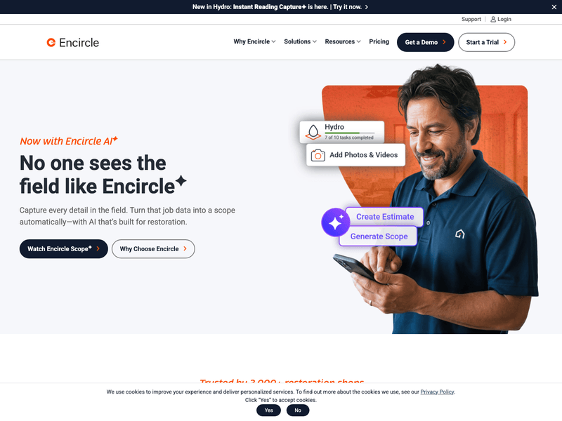
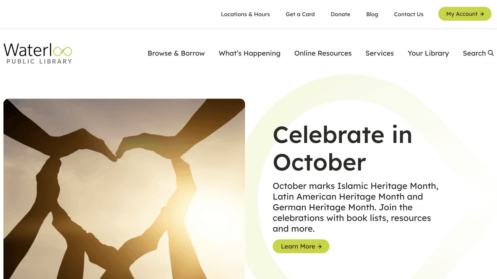
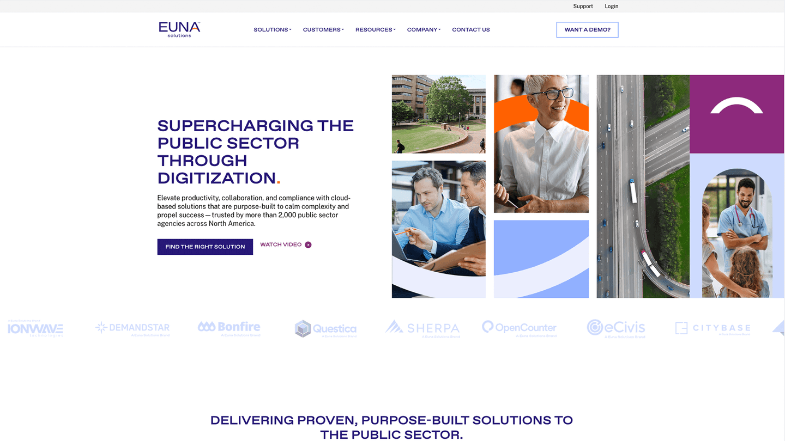
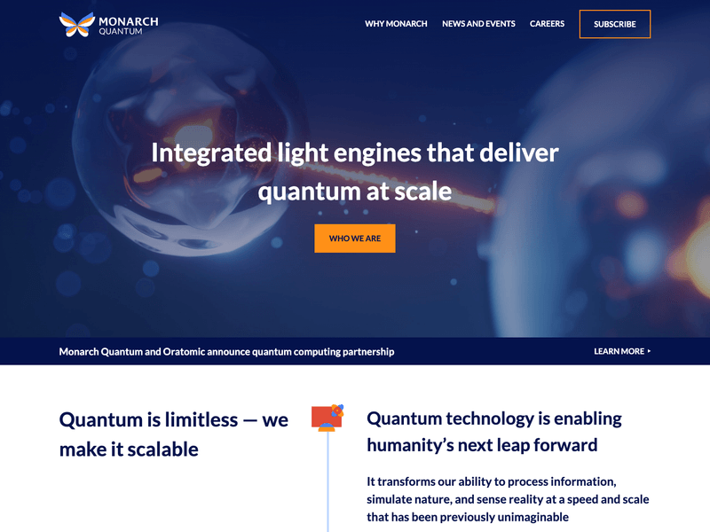

Kitchener, Ontario
Custom WordPress Developer in Kitchener
A Kitchener web developer and designer building fast, accessible custom WordPress websites for local businesses, startups, and agencies.
Websites start at $2,000 + HST. Practical, senior development with a polished handoff.
- 14+ years building for the web
- Conestoga College instructor
- Goosechase co-founder
WordPress development & web design for Kitchener
Kitchener has grown from a manufacturing city into one of Canada's strongest tech and innovation hubs, anchored by the Communitech ecosystem, Conestoga College, and a deep bench of startups and established firms downtown. I help Kitchener organizations turn that momentum into websites that look considered, load fast, and stay easy to manage after launch.
As both a web designer and custom WordPress developer, I cover the full build: clean front-end design, maintainable theme code, flexible editing with ACF and Gutenberg, performance, and accessibility. Whether you are a Kitchener startup shipping a first marketing site or an established business modernizing a dated WordPress install, you get senior-level work without the agency overhead.
Custom WordPress themes
Clean, maintainable theme development built around your Kitchener brand, content, and conversion goals.
Web design & Figma to WordPress
Precise design and front-end implementation for Kitchener businesses, agencies, and teams that care about the details.
ACF & Gutenberg blocks
Flexible editing systems that let your team build pages without wrecking the design.
Performance & accessibility
Speed, clean structure, metadata, structured data, and Core Web Vitals-minded development.
WordPress maintenance
Support for existing Kitchener WordPress sites: updates, fixes, cleanup, and improvements.
Agency development support
Senior freelance WordPress execution for Kitchener agencies without adding headcount.
Selected WordPress work
A sample of custom WordPress and front-end work for agencies, organizations, startups, and established brands. See all projects.




Our team at Stryve loves working with Quinn! Quinn is knowledgeable, responsive, and energetic. We highly recommend him for web development!
Get in Touch
If you need a Kitchener WordPress developer or web designer, start with a free consultation. Call 226-338-1659 or email quinn@battersby.ca.
Kitchener FAQ
- Do you work with Kitchener businesses?
Yes. I build custom WordPress websites and web designs for Kitchener businesses, startups, nonprofits, and agencies, from new builds to redesigns and ongoing support.
- How much does a Kitchener website cost?
Custom WordPress websites start at $2,000 + HST. The final estimate depends on scope, design, content, and features. The first consultation is free.
- Are you a Kitchener web designer or web developer?
Both. I handle web design and custom WordPress development together, so Kitchener clients get a polished design that is built properly and easy to manage.